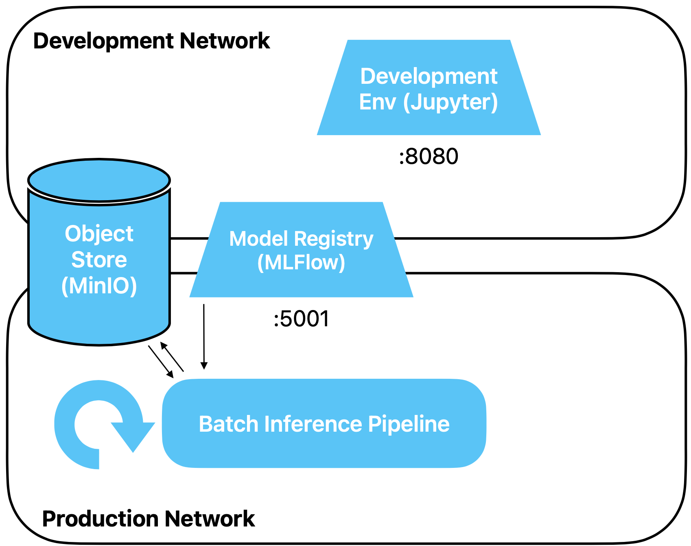

Batch Inference
Our model is fully trained and stored in the registry. Now we want to use it to
make predictions using a batch pipeline. Fresh (raw) data for which we need a
prediction is written to the object store either in batches or continuously by a
surrounding system or an external process. Our pipeline is activated periodically, for example
once per night, fetches the data from the past period, makes predictions for this
data, and writes the result back to the object store.
Preparation
Create a new Jupyter notebook for this exercise.
Exercises
Architecture
We are adding the first pipeline to our architecture. The pipeline retrieves the model from
MLFlow.
It reads the data for inference, for example once every night, from the object store.
It also writes the predictions back there.

Simulate inference data
First, we need code to create a bucket with data for which we want to perform inference.
We keep it simple here and don't create fresh data, but instead use the
training data. In the stream processing exercise, we will then simulate fresh data in a better
way.
Load the training data, remove the label, and add a column
named event_date as the first column in the DataFrame. The event date should be of type
datetime64[ns]
and approximately a quarter of the rows should have one of the following four values:
2026-02-20,
2026-02-21, 2026-02-22, 2026-02-23.
Suggested solution
import pandas as pd
import numpy as np
# you can ignore the FutureWarning
df = pd.read_parquet('s3://traindata/train_raw.parquet', storage_options={"anon": False}).drop('class', axis='columns')
# quick and dirty way to add an event date column
df.insert(0, 'event_date', -1)
num_days = 4
for chunk, date_ in zip(np.array_split(df, num_days), pd.date_range("2026-02-20", periods=num_days, freq="d")):
chunk.event_date = date_
df = pd.concat([df, chunk], axis='rows')
# we need to remove all original rows, those are now duplicates since we simply concatenated
df = df[df.event_date != -1]
df.head()
We create a new bucket
import s3fs
s3 = s3fs.S3FileSystem()
s3.mkdir("inferencedata")
And store the data.
df.to_parquet('s3://inferencedata/inference_raw.parquet', storage_options={"anon": False})
Load model
Now the pipeline code begins.
First, load your model from MLFlow. You can reference the model in various ways.
Ideally, you do this via model name and a version alias.
Suggested solution
import mlflow
# we never defined an official name, make sure you use the name of your own registered model here
model_name = "mushroom"
# this only works if you set this alias for above model
model_version_alias = "champion"
model_uri = f"models:/{model_name}@{model_version_alias}"
model = mlflow.sklearn.load_model(model_uri)
Load data
Next, load the data just generated. However, only load the data from
yesterday, not all data. This doesn't mean loading all data and
then filtering, but rather filter by date already during loading to remain memory-efficient and
generate less network traffic.
Suggested solution
yesterday = pd.Timestamp.today() - pd.Timedelta(days=1)
yesterday = yesterday.replace(hour=0, minute=0, second=0, microsecond=0)
# only for debugging purposes
# yesterday = pd.to_datetime('2026-02-22') - pd.Timedelta(days=1)
sel = [("event_date", "==", yesterday)]
df = pd.read_parquet('s3://inferencedata/inference_raw.parquet', filters=sel, storage_options={"anon": False})
df.head()
Perform inference
Now perform inference on the loaded data. Append a column named
prediction at the end of the DataFrame df.
Suggested solution
df['prediction'] = model.predict(df.drop('event_date', axis='columns'))
Write result back to the object store
Now you can write the result back. We are taking the easy route and skip creating a new
bucket.
df.to_parquet('s3://inferencedata/inference_prediction.parquet', storage_options={"anon": False})
Wrapup
In this exercise, you built a simple batch processing pipeline with Python/Pandas that
performs inference for our mushroom model and writes the result back to the object store.
In doing so, we also took a few shortcuts, which is acceptable in the context of a course,
but we should also be aware of them:
- Batch processing is normally done with Spark / PySpark and not with Pandas.
However, the difference is not relevant here.
- We work with simple timestamps. No handling of time zones, no conversion
to UTC. Normalization of timestamps to UTC is an important step in
data pipelines.
- We don't log anything, especially no operational metrics like memory consumption
- No tests, no proper error handling
- Our pipeline lives in a Jupyter notebook. To properly operationalize it,
it should be called in the form of a script by an orchestration tool like Apache
Airflow
And in particular:
We work with the raw data and don't do any feature engineering. Even though we could easily
calculate features in our batch pipeline, this becomes unwieldy as the number of features
and models increases.
The solution is to use a feature store, more on this later.